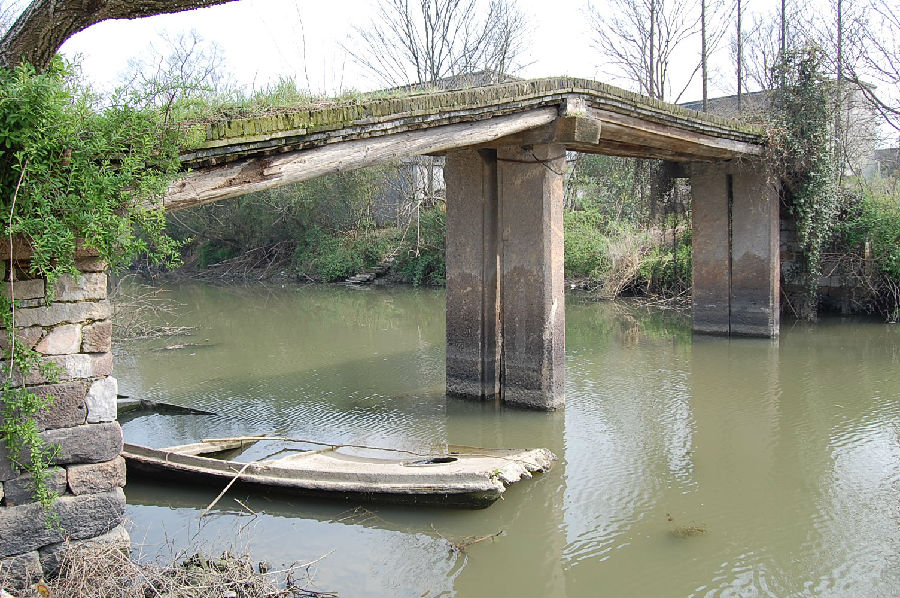

嘉兴市文物保护网 · 市级文物保护点 · 2020-11-06 · 原文

红联村大桥位于嘉兴市秀洲区王店镇红联村22、23组，据村民回忆及桥的形制判断建筑年代为民国。南北向跨大桥港，系三孔梁式砖桥，桥全长21.3米，宽2.15米，桥底据水面高度3.3米。桥柱由两块石板组成桥身底部铺木梁，梁上竖铺小青砖，东西落坡各设石阶7级。红联村大桥以木梁和石柱为基础，辅以青砖的桥梁形制在嘉兴较为少见，为研究古桥建筑史提供了实证，具有较高的科学和历史价值。2009年公布嘉兴市文物保护点。